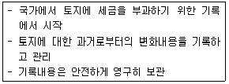
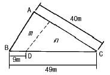
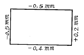
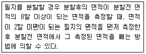

지적기능사 (2003-03-30 기출문제)
1과목: 지적일반(임의구분)
1. 다음에서 설명하고 있는 지적제도의 특성과 가장 관련이 깊은 것은?

- 안전성
- 공개성
- 역사성
- 전문성
(정답률: 72%)

2. 다음 중 지적의 3대 요소에 해당하지 않는 것은?
- 토지
- 등록
- 공부
- 소관청
(정답률: 90%)
3. 고속도로안의 휴게소 부지에 해당되는 지목은?
- 도로
- 구거
- 잡종지
- 유원지
(정답률: 84%)
4. 지적공부중 대장에 등록해야 할 사항이 아닌 것은?
- 고유번호
- 도면번호 및 필지별 대장의 장번호
- 토지등급 또는 기준수확량 등급
- 도곽선 및 도곽선 수치
(정답률: 40%)
5. 다음 지목 중 체육 용지로 설정할 수 없는 것은?
- 실내체육관
- 골프장
- 정구장
- 경륜장
(정답률: 46%)
6. 주된 토지의 면적과 종된 토지의 면적 비율에 따라 일필지로 하지 않는 경우가 있다. 어느 경우인가?
- 주된 토지의 면적에 종된 토지의 면적이 10% 미만일 때
- 주된 토지의 면적에 종된 토지의 면적이 330m2미만일 때
- 주된 토지의 면적에 종된 토지의 면적이 250m2미만일 때
- 주된 토지에 종된 토지의 지목이 "대"일 때
(정답률: 70%)
7. 필지의 성립요건에 대한 설명으로 타당하지 않은 것은?
- 지번부여지역 안의 토지이어야 함.
- 소유자와는 상관 없음.
- 지반이 연속적이어야 함.
- 용도가 동일하여야 함.
(정답률: 69%)
8. 지적 공부의 정리 절차가 옳게 나열 된 것은?
- 현지조사→ 공부정리→지적공부 정리통지→지적공부 정리 결의
- 현지조사→지적공부 정리 결의→공부정리→지적공부 정리통지
- 지적공부 정리 결의→공부정리→지적공부 정리통지→현지조사
- 지적공부 정리 결의→현지조사→공부정리→지적공부 정리통지
(정답률: 60%)
9. 다음 중 지번의 역할과 가장 거리가 먼 것은?
- 토지 위치 추측
- 토지 규모 추측
- 관리 객체 구분
- 토지 거래 단위
(정답률: 30%)
10. 지적공부를 비치하는데 따른 원칙으로 가장 거리가 먼것은?
- 소관청의 임의 반출금지
- 멸실시 즉시 복구
- 토지관련 범죄수사시 반출허용
- 위난 대피시 일시 반출가능
(정답률: 57%)
11. 우리나라의 서부원점 위치는?
- 북위 38도, 동경 125도
- 북위 38도, 동경 127도
- 북위 38도, 동경 129도
- 북위 38도, 동경 131도
(정답률: 50%)
12. 현행 우리나라 4등 삼각점의 평균 변장은 다음 중 어느것인가?
- 1km
- 2.5km
- 5km
- 10.5km
(정답률: 48%)
13. 측판을 세우는데 필요한 3가지 조건은?
- 중심, 구심, 표정
- 정위, 표정, 치심
- 구심, 정준, 표정
- 표정, 이심, 정준
(정답률: 56%)
14. 축척 1/1000 도면에서 도곽선의 신축량이 +2.0mm일 때 면적보정계수는?
- 1.0117
- 0.9884
- 1.0035
- 0.9965
(정답률: 71%)
15. 교회법에 의한 지적삼각보조점의 관측과 계산에서 기지각과의 수평각 측각공차는?
- ± 20초 이내
- ± 30초 이내
- ± 40초 이내
- ± 50초 이내
(정답률: 18%)
16. 토지면적 측정시 도곽선의 길이에 얼마 이상 신축이 있을 때 면적을 보정해야 하는가?
- 0.3㎜
- 0.5㎜
- 1.0㎜
- 1.5㎜
(정답률: 69%)
17. 2개의 삼각형으로부터 계산한 위치의 연결교차가 얼마 이하일 때 그 평균치를 지적삼각보조점의 위치로 하는가?
- 0.30m 이하
- 0.40m 이하
- 0.50m 이하
- 0.60m 이하
(정답률: 48%)
18. 지적삼각점의 계산에서 자오선 수차의 단위는?
- 초아래 1자리
- 초아래 2자리
- 초아래 3자리
- 초아래 4자리
(정답률: 32%)
19. 측판측량의 도선법에서 1도선의 도선 변수는?
- 10변 이하로 한다.
- 15변 이하로 한다.
- 20변 이하로 한다.
- 25변 이하로 한다.
(정답률: 45%)
20. 그림과 같은 토지의 1변 BC=49m 위의 점 D 와 AC=40m 위의 점 E 를 연결하여 직선 DE 로서 뽁ABC의 면적을 2등분 하려면 적당한 AE 의 길이는?

- 14.5m
- 15.5m
- 16.5m
- 17.5m
(정답률: 51%)
2과목: 지적측량(임의구분)
21. 우리나라 지적도 축척이 아닌 것은?
- 1/500
- 1/600
- 1/1500
- 1/2400
(정답률: 75%)
22. 도근측량을 도선법으로 시행할 경우 1등 도선에 해당하는 것은?
- 삼각점과 도근점간을 연결하는 도선
- 지적삼각점과 도근점간을 연결하는 도선
- 지적삼각보조점과 도근점간을 연결하는 도선
- 지적삼각보조점과 상호간을 연결하는 도선
(정답률: 16%)
23. 삼각쇄의 조정계산에서 삼각규약은 각 삼각형 내각의 합 (α +β +γ)이 얼마가 되어야 한다는 규약 조건인가?
- 0°
- 90°
- 180°
- 360°
(정답률: 75%)
24. 유심다각망에서 기지점을 중심으로 한 중심각의 합은 얼마가 되어야 하는가?
- 90°
- 180°
- 270°
- 360°
(정답률: 47%)
25. 다음중 도근측량에서 2등도선에 해당하는 것은?
- 지적삼각점간 연결
- 도선명의 표기는 가, 나, 다 순으로 표기
- 지적삼각점과 지적삼각 보조점간 연결
- 도선명의 표기는 ㄱ,ㄴ,ㄷ 순으로 표기
(정답률: 55%)
26. 지적기능사가 지적측량 업무에 종사할 수 없는 경우가 아닌 것은?
- 한정치산자
- 징계에 의하여 자격정지 중에 있는 자
- 징계에 의하여 견책처분을 받은 자
- 파산자로 복권되지 아니한 자
(정답률: 26%)
27. 다음 중에서 지적기술자의 징계 방법(종류)에 해당되지 아니 하는 것은?
- 파면
- 견책
- 자격취소
- 6개월간 자격정지
(정답률: 35%)
28. 공유수면 매립지의 토지중 제방 등을 토지에 편입하여 등록할 때에는 어느 부분을 측정점으로 하는가?
- 최대만조수위
- 평균수위
- 최저수위
- 제방 등의 바깥쪽 어깨부분
(정답률: 71%)
29. 다음 중 토지의 이동에 따른 지적공부의 정리 시기로 알맞은 것은?
- 도시계획 설계가 완료된 때
- 도시계획에 의한 도로공사가 준공 되었을 때
- 수리시설공사 설계가 완료되었을 때
- 경지정리공사 설계에 착수할 때
(정답률: 50%)
30. 지적법상 경계점좌표등록부에 등록할 사항으로 규정된 것이 아닌 것은?
- 지번
- 토지 지목
- 토지 소재
- 좌표
(정답률: 60%)
31. 다음 중 일람도에 등재할 사항이 아닌 것은?
- 지번설정 지역의 경계 및 명칭
- 도면의 제명 및 축척
- 도곽선 및 도곽선 치수
- 지번 및 경계
(정답률: 40%)
32. 측량준비도의 기재 사항이 아닌 것은?
- 측량대상 토지의 지번
- 측량대상 토지의 점유현황선
- 인근 토지의 경계선
- 인근 토지의 지목
(정답률: 35%)
33. 지적정리 통지의 대상으로 볼 수 없는 것은?
- 토지의 지번이 변경된 경우
- 지적 공부를 복구한 경우
- 부동산 등기부 등본에 등록하는 경우
- 등기 촉탁을 한 경우
(정답률: 32%)
34. 지적측량 결과의 적부심사 청구에 따른 심의 의결은 어디에서 하는가?
- 도지사
- 시장, 군수, 구청장
- 지방지적위원회
- 행정자치부장관
(정답률: 37%)
35. 현행 지적법에 규정된 지목의 종류는?
- 20종
- 24종
- 28종
- 32종
(정답률: 86%)
36. 축척 1/600 지적도와 경계점좌표등록부에 등록하는 지역의 토지 면적등록 최소단위는?
- 0.001m2
- 0.01m2
- 0.1m2
- 1m2
(정답률: 65%)
37. 지적공부를 비치, 보관하는 곳이 아닌 곳은?
- 도(道)
- 구(區)
- 군(郡)
- 시(市)
(정답률: 50%)
38. 지적측량시 경계의 측정기준으로 맞는 것은?
- 토지가 해면 또는 수면에 접하는 때에는 중등 조위면을 측정점으로 한다.
- 제방을 등록할 때에는 제방바깥쪽 어깨부분을 측정점으로 한다.
- 고저가 있는 대지를 분할할 때에는 토지의 상단부를 측정점으로 한다.
- 도로에 절토된 부분이 있는 경우에는 그 경사면의 하단부를 측정점으로 한다.
(정답률: 64%)
39. 임야대장에 등록할 사항으로 틀린 것은?
- 토지의 소재
- 지번
- 면적
- 경계
(정답률: 44%)
40. 일반적으로 축척 1/600 지적도 시행지역에 대한 일람도의 축척은?
- 1/1,200
- 1/3,000
- 1/6,000
- 1/12,000
(정답률: 51%)
3과목: 지적공부정리(임의구분)
41. 지적공부에 등록하는 토지 표시의 결정심사는 어느 방법으로 하는가?
- 객관적 심사
- 형식적 심사
- 대리 심사
- 사실 심사
(정답률: 30%)
42. 지적도 정리에서 합병된 필지의 경계정정시 구경계선 말소 방법은?
- 양홍의 평행쌍선
- 홍색단교차선
- 묵의단교차선
- 묵평행쌍선
(정답률: 50%)
43. 지적공부를 복구한 때에는 며칠간 소관청의 게시판에 게시하는가?
- 5일
- 7일
- 10일
- 15일
(정답률: 39%)
44. 토지 이동이 있을 경우에 소관청이 작성하여 지적공부 정리의 근거가 되는 서류는?
- 지적측량 성과
- 지적 조서
- 토지이동정리 결의서
- 등기필 통지서
(정답률: 71%)
45. 우리나라 지적도 축척이 아닌 것은?
- 1/500
- 1/600
- 1/1,000
- 1/1,500
(정답률: 78%)
46. 투시도의 기호와 설명이 맞는 것은?
- 기면(G.P.) : 화면과 수평으로 놓인 기준이 되는면
- 화면(P.P.) : 물체를 투시하여 도면을 그리는 평화면
- 소점(V.P.) : 시점이 화면 위에 투상되는 점
- 시축선(A.V.) : 시점에서 입화면에 평행한 투사선
(정답률: 37%)
47. 실선 4mm와 허선 2mm로 연결하고 실선중앙에 1mm로 교차 하며 허선에 직경 0.3mm의 점 1개를 제도하는 행정 구역선은?
- 시,도계
- 시,군계
- 국계
- 리,동계
(정답률: 32%)
48. 비례 디바이더의 주용도는?
- 직선장 측정
- 원호의 작도
- 곡선장 측정
- 도형의 확대
(정답률: 34%)
49. 다음 제도용 컴퍼스중 직경 10㎜ 이하의 소원을 제도할 때 사용되는 것은?
- 보통 컴퍼스
- 빔 컴퍼스
- 비례 컴퍼스
- 스프링 컴퍼스
(정답률: 60%)
50. 삼사법에 의한 측정 면적은 반드시 2회 이상 측정한 값을 평균하여 사용하는데 그 허용교차를 구하는 식은? (단, A:허용교차면적, M:축척의 분모수, F:측정면적의 합을 2로 나눈 수)
- A=0.0232 M F
- A=0.0262 M F
- A=0.0232 F M
- A=0.0262 F M
(정답률: 46%)
51. 전자면적계의 설명에서 옳지 않은 것은?
- 전자면적계는 면적측정 이외에 계산기로도 사용이 가능하다.
- 한 필지의 면적은 구할 수 있으나 변장은 구할 수 없다.
- 좌표값 측정도 가능하다.
- 면적측정단위는 m2, 평 등 다른 단위도 측정할 수 있다.
(정답률: 45%)
52. 지적도에 신축이 있을 때 면적 측정치의 결정방법으로 옳은 것은?
- 측정면적에 도곽신축 보정계수를 곱하여 산출된 면적에 오차를 배부하여 면적을 결정한다.
- 도곽이 늘어나면 늘어난 면적만큼 더한다.
- 도곽이 줄어 들었을 때에는 줄어든 면적만큼 뺀다.
- 측정면적대로 결정한다.
(정답률: 65%)
53. 토지 대장 및 임야 대장에 등록하는 토지의 1 필지 면적이 0.4m2 일 경우 이를 어떻게 등록하는가?
- 0.5m2
- 0.4m2
- 1m2
- 절사하여 필지를 없애버린다
(정답률: 45%)
54. 3변의 길이가 각각 30m, 30m, 20m인 삼각형의 면적을 계산한 값은?
- 252.8m2
- 262.8m2
- 272.8m2
- 282.8m2
(정답률: 46%)
55. 어느 지적도의 도곽선이 그림과 같이 신축되었다. 이 도면의 도곽신축량은 얼마인가?

- - 0.3mm
- ± 0.4mm
- + 0.6mm
- ± 0.8mm
(정답률: 57%)
56. 지적삼각점과 지적삼각보조점은 직경 몇 mm의 원으로 제도하는가?
- 1mm
- 2mm
- 3mm
- 4mm
(정답률: 71%)
57. 다음과 같은 설명에 의해 면적을 측정할 수 있는 필지의 원면적으로 알맞은 것은?

- 3,000m2 이상
- 5,000m2 이상
- 10,000m2 이상
- 20,000m2 이상
(정답률: 34%)
58. 축척 1/2400 지역에서 푸라니미터에 의하여 면적을 측정할 경우 유표 한 눈금의 단위면적은?
- 5m2
- 10m2
- 12m2
- 24m2
(정답률: 41%)
59. 측량준비도 작성할 때 도면에 등록하는 도곽선의 제도가 바른 것은?
- 도곽선은 1mm의 홍색(적색)선으로 제도한다.
- 도곽선은 3mm의 홍색(적색)선으로 제도한다.
- 도곽선은 6mm의 홍색(적색)선으로 제도한다.
- 도곽선은 9mm의 홍색(적색)선으로 제도한다.
(정답률: 48%)
60. 지적도 작성시 제명 및 축척의 글자 크기로 맞는 것은?
- 3mm
- 5mm
- 7mm
- 9mm
(정답률: 42%)